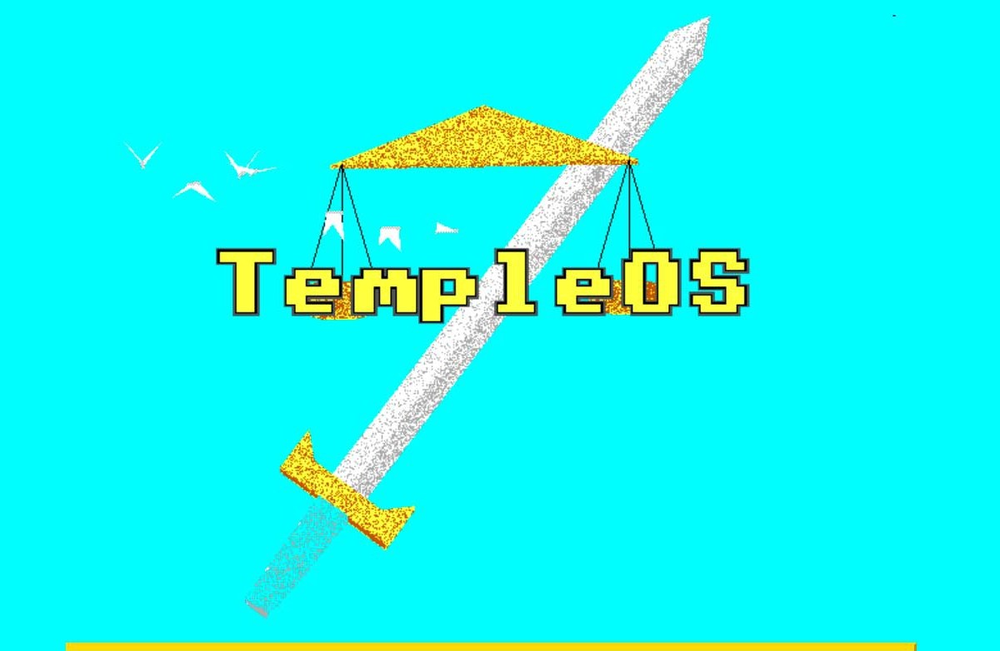

TempleOS es un Sistema Operativo de 64 bits multitarea, capaz de trabajar con múltiples procesadores, de código abierto y
dominio público. No está pensado para conectarse a internet ni para realizar intercambio de archivos. A diferencia de muchos
otros SOs que se basan en Unix, TempleOS es único en su especie, ya que está desarrollado completamente desde 0, sin basarse
en nada. Está escrito en HolyC, también conocido como C+. Es una especie de lenguaje híbrido entre C y C++ desarrollado
específicamente para este proyecto por su creador, Terry A. Davis.
Tras contactar por primera vez con la informática de la mano de un Apple II en el colegio,
el propio Terry Davis mencionó que, cuando era adolescente, aprendió lenguaje ensamblador en una Commodore 64, y que le
gustaba su simpleza y la capacidad que tenía de acceder a todas las características del sistema.
Por ello TempleOS ha sido denominado como un Commodore 64 x86_64 moderno, utilizando incluso una interfaz similar.
Terry Davis afirmó que tenía contacto directo con Dios y que Él, en una ocasión, le había ordenado la creación de un sistema
operativo que sería el Tercer Templo según lo profetizado en la Biblia, tras la destrucción del Segundo Templo en el año 70
d.C. De hecho, las características básicas del sistema como la resolución de 640x480, los 16 colores y una única voz en
todo el sistema le fueron explicadas por el propio Dios.
Vida de Terry Davis
A nadie se le escapa que Terry Davis, su creador, tenía un gran talento, ya que crear un sistema operativo desde 0, sin ayuda
e incluyendo el kernel, es una tarea faraónica. Graduado en Ingeniería Electrónica por la Universidad Estatal de Arizona,
se dedicó durante seis años a programar para la multinacional sobradamente conocida Ticketmaster, que en aquel entonces empleaba
computadoras VAX con arquitectura CISC ISA de 32 bits. Terry Davis era un genio sin parangón, pero como todo genio, también llegó
la locura, en forma de episodios maníacos desde 1996, obligándole a estar varias veces ingresado en un centro psiquiátrico.
Terry Davis en 1985
Aunque inicialmente se le diagnosticó un trastorno bipolar, sus episodios cada vez iban a peor, por lo que el diagnóstico
inicial cambió bipolaridad por esquizofrenia, al alegar que era continuamente perseguido por extraterrestres y agentes
del servicio secreto. Estos delirios fueron una constante durante el resto de su vida, con largos períodos en el hospital.
Además, le apartaron de la vida laboral, provocando que se encerrara aún más en sí mismo.
También atribuyó de profundo significado a la letra de Rage Against the Machine "algunos de los que trabajan en las fuerzas son los mismos que queman cruces". En sus propias palabras:
Empecé a ver gente siguiéndome con trajes y esas cosas. Parecía que algo extraño estaba pasando.
En uno de estos delirios, Terry afirma que estableció comunicación directa con Dios y que este le pidió que construyera
el tan esperado Tercer Templo, sucesor del Segundo Templo destruido en el año 70 d.C. Pero no tenía que construir un
templo de piedra, no. El templo sería un sistema operativo, completamente funcional y construido desde 0, sin ningún
recurso externo como un kernel ya existente (kernel de Linux, por ejemplo).
El escaso contacto con la realidad que mantenía, lo volcaba en diversas redes sociales, donde se podía comprobar que, pese a los contenidos racistas, paranoicos,
mesiánicos, o completamente incomprensibles de muchos de sus posts; cuando se centraba en la parte puramente racional y lógica de su trabajo en la construcción
de su sistema operativo, sus registros eran completamente admirables y puramente científicos, sin mella en su lógica.
Su desarrollo comenzó en 2003, para el cual usó HolyC, también llamado C+, un lenguaje creado por él que nació como
mezcla de C y C++. En las fases iniciales de desarrollo, el SO no tenía nombre definitivo. Empezó siendo J OS, para más
tarde pasar a LoseThOS. Terry solía mencionar que su SO era principalmente para hacer videojuegos y que no contaría con
conexión a internet ni soporte para ningún tipo de red, ya que a él no le interesaba, según sus propias palabras,
“reinventar la rueda”. En 2013 finalizó el desarrollo, anunciándolo de una manera que no decepcionaría a
nadie: “El templo de Dios está terminado. Ahora Dios está matando a la CIA hasta que se desborde”. TempleOS recibiría
su última actualización el 20 de noviembre de 2017.
Los últimos años de Davis fueron especialmente caóticos, alternando períodos en la cárcel o en la calle sin tener una
vivienda. Dejó la medicación pues creía que esta limitaba su creatividad, lo que agravó su condición médica. Muchos de
sus fans, conocedores de la situación de Terry, intentaron ayudarlo llevándole comida y otros suministros, pero él
solía negarse a recibir nada de esto.
Terry Davis murió el 11 de agosto de 2018, al ser embestido por un tren mientras caminaba por las vías del ferrocarril.
A pesar de que no se pudo determinar si esto fue un accidente o un suicidio, los investigadores determinaron que Terry
iba caminando de espaldas al tren, lo que sumado a su último video en YouTube, subido unas horas antes del suceso,
en el que declaró haber borrado todos los vídeos de su canal para no ensuciar Internet, hace pensar a sus fans que
Terry, efectivamente, decidió terminar voluntariamente con su vida. Conforme la noticia se hizo pública, numerosas
comunidades de desarrolladores decidieron homenajearlo de distintas maneras. Uno de estos homenajes es Shrine, una
modificación de TempleOS que incluye características como conexión a internet, funcionalidad que Davis había dejado
fuera de su proyecto.
Detalles técnicos de TempleOS
TempleOS es un sistema operativo multitarea capaz de funcionar con un microprocesador multinúcleo, de dominio público
(una auténtica rareza), código abierto, sin conexión a internet y orientado a ser usado por un único usuario. Una de
las mayores rarezas respecto a otros sistemas es su funcionamiento en el anillo cero. Esto quiere decir que interactúa
de forma directa con el hardware, sin añadir ninguna capa de seguridad, lo que sería considerado una locura para
cualquier SO moderno que se precie. Sin embargo, esta elección es totalmente lógica para lo que Davis quería, ya que
su intención era poder tener acceso a todo y hurgar en los entresijos del sistema.
El SO se ejecuta en ASCII de 8 bits, además de tener una biblioteca de gráficos 2D y 3D, ejecutado en VGA con resolución
640x480 de 16 colores. Es compatible con teclado y ratón, a pesar de que está pensado para funcionar principalmente
mediante texto. Tiene compatibilidad con los sistemas de archivos FAT32, ISO 9660 y RedSea, este último creado por
el propio Davis. Como ya hemos mencionado, muchas de estas características fueron solicitadas directamente por Dios.
Por ejemplo, el objetivo de la resolución y la limitación de colores era que los niños pudieran realizar dibujos para
Dios con gran simpleza.
Como elementos destacados que incluye el SO podemos destacar un simulador de vuelo, un compilador y un kernel
desarrollado desde 0. Pero hay un programa que, si Terry siguiera con nosotros, seguramente le daría especial
relevancia. Hablamos de una especie de juego, “Después de Egipto”, cuyo objetivo es andar hasta un arbusto en llamas
para utilizar un “cronómetro”. Este cronómetro está pensado para actuar como un oráculo (de hecho Terry lo llamaba
el oráculo de Dios) que genera texto pseudo-aleatorio. Davis comparaba esto con la Ouija y con la glosolalia (un
lenguaje con palabras sin sentido, alteradas en orden y sintaxis inventada, típica de personas en estado de trance).
Como mencionamos, TempleOS está escrito en HolyC, un lenguaje desarrollado por Davis como variante de C y C++. Se puede
utilizar para interactuar con el shell así como para escribir y ejecutar aplicaciones. TempleOS incluye un IDE que utiliza
un formato de texto no estándar llamado DolDoc, creado también por Terry Davis, como no podía ser de otro modo, que admite
hipervínculos o imágenes. Si os apetece guardar un archivo de código con un modelo en 3D de un salmón como comentario del código, podéis.
El código escrito puede ser compilado just-in-time, un método para mejorar la eficiencia de aquellos sistemas que
compilan a bytecode.
Esta tarea mastodóntica hizo que Terry A Davis generara unas 120.000 líneas de código, un proyecto fascinante y
técnicamente sin precedentes por un genio que cayó en la más absoluta oscuridad.